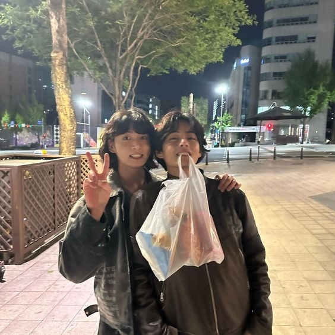

JK Hot Pot

jungkooks hotpot lets goooooo
- 2-3 stalks green onions (green and white parts)
- 1/2 yellow onion
- 1-2 bay leaves
- 4-6 garlic cloves
- 1/2 tsp peppercorns
- 1-2 ginger slices
- Make sure the water covers the meat when placing in a pot to boil.
- Boil the meat and cover for about 3-4 hours in a pot on medium-high at first then to low heat for the last hour. ALWAYS make sure there's enough water. If using a pressure cooker, the time needs to be adjusted accordingly (about 1-2 hours).
- Once the meat is tender, save the broth. Make sure to cut the meat into slices and set aside.
- In a new pots (or cleaned pot) set your veggies, like napa cabbage (optional), mushrooms and chives/green onions (only the green parts) in a way where the meat is laid above it and in the center.
- To the broth that's saved, add 2 tbsp soy sauce, 1 tsp salt, and pepper then mix. That's the broth that will go over your "hot pot". Add this to the pot with the veggies and meat and let it boil for 3 minutes before eating with rice and kimchi. Enjoy!